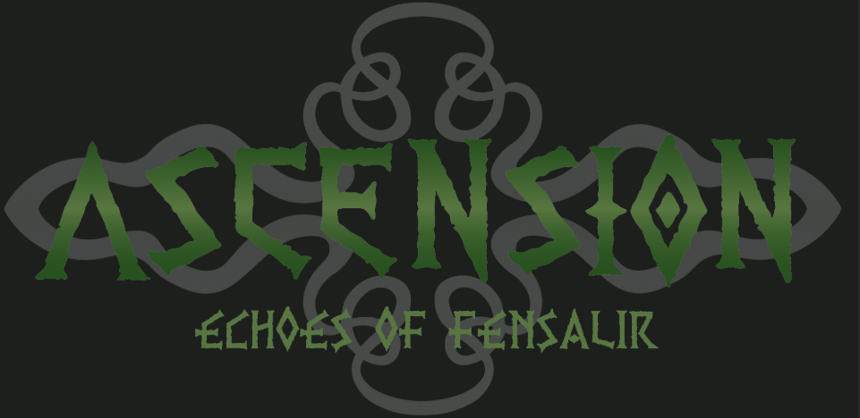

Collaborative Unity project
Ascension
Contributed melee combat, health and damage systems, UI integration, and gameplay feedback to a team-developed game. Worked on debugging and integrating animation, audio and visual effects.
Explore Ascension